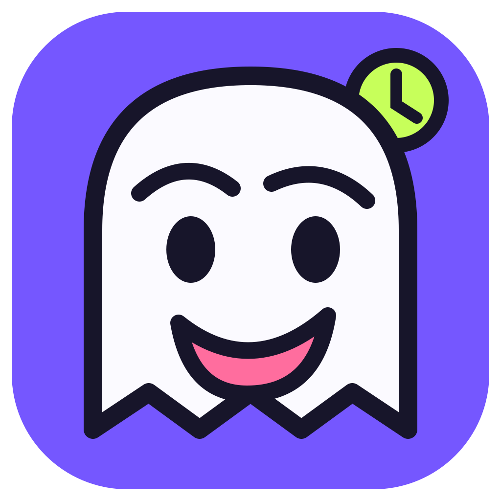
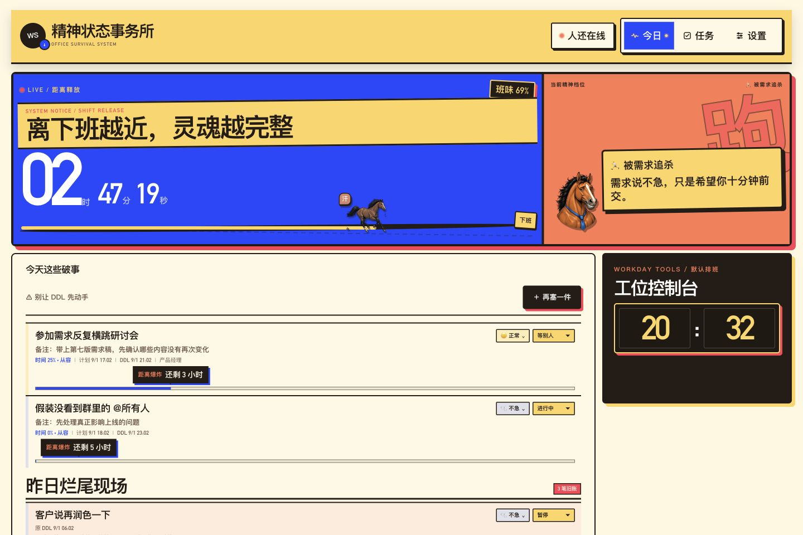
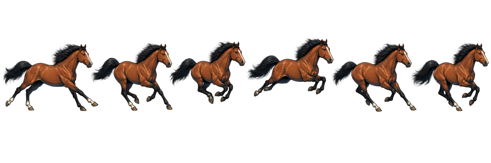
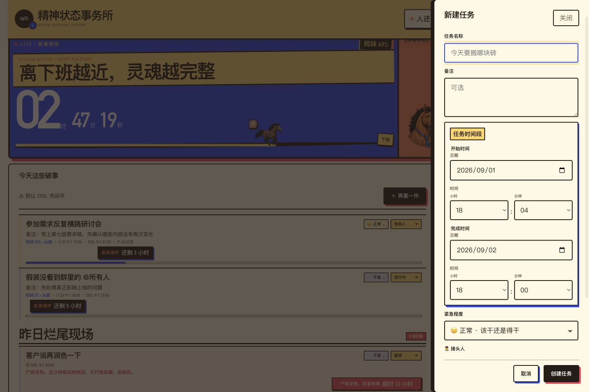

⏱
下班倒计时
把今天还剩多少班味摆在桌面上。离下班越近，灵魂越完整。

精神状态事务所OFFICE SURVIVAL SYSTEMDESKTOP APP · v0.1.2
一个有点嘴欠、但真的能帮你下班的桌面任务管理工具。盯住 DDL、收拾昨日烂尾，也提醒你别把工位坐成永久产权。
当前稳定版 v0.1.2 · 免费下载 · 数据保存在本地


01 / CORE FEATURES
它不劝你热爱工作，只负责让每件破事知道自己该待在哪。
把今天还剩多少班味摆在桌面上。离下班越近，灵魂越完整。
从“从容”到“距离爆炸”，紧急程度一眼可见，不再靠记忆硬扛。
任务过了截止日才进旧账；跨天但仍在有效期内的任务继续留在今日。
进行中、暂停、等别人、已完成、已取消，真实还原办公室里的复杂现场。
重要节点会提醒你；平时安静待着，不把通知本身变成下一件破事。
任务数据保存在你的电脑里。无需注册账号，打开就能开始收拾现场。
MOOD-BASED APP ICON
早上勉强营业，下午灵魂出走，临近下班开始兴奋，加班时彻底摆烂；如果 DDL 爆炸，它会比你先慌。
02 / PRODUCT TOUR
一屏看清今天、DDL、旧账与下班时间；新增任务时，该细的地方也没有省。

03 / USE CASES
每次改动都有去处，不让“再润色一下”凭空消失。
用状态和优先级分清正在做、等别人和暂时放下。
没有 DDL 或仍在有效期内的跨天任务，会一直留在今日视野。
设好工作时间，让桌面上的倒计时替你守住下班线。
跨天任务归类修复 · 最新动态应用图标 · macOS / Windows
macOS 当前安装包未经过 Apple 公证；首次打开如被拦截，请在“系统设置 → 隐私与安全性”中允许打开。
Windows 当前安装包未做发布者签名；若 SmartScreen 提示，请确认下载来源为本项目 GitHub Releases。
OPEN SOURCE ON GITHUB
查看源码、提交问题，或者围观这个事务所接下来还能长出什么。